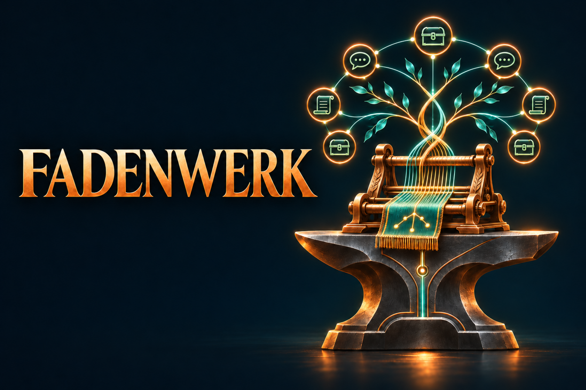
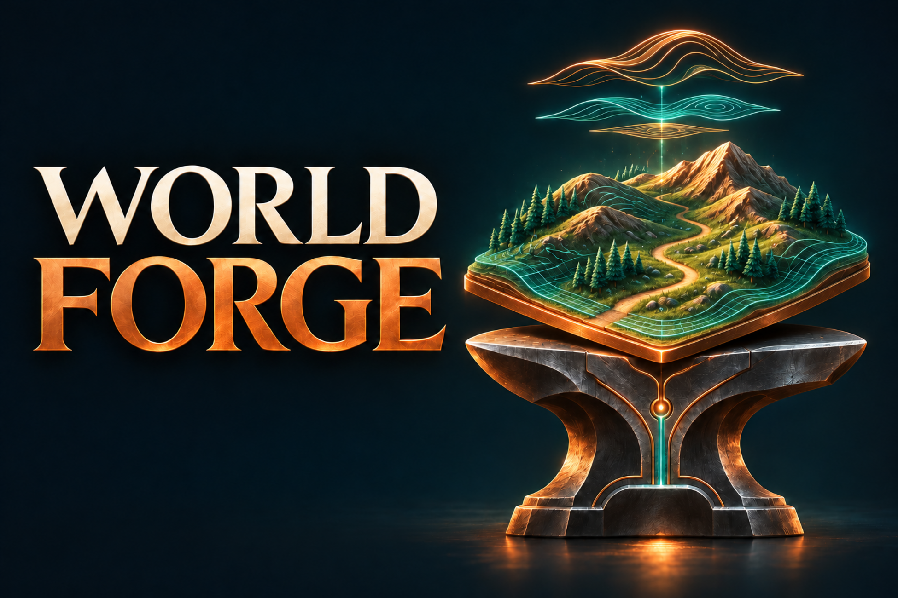

Fadenwerk
Quests, Dialogue & Rewards · Preisvorgabe 6 USD, einmalig

Promotional illustration · kein Spiel- oder Editor-Screenshot. Keine dargestellten Umweltmodelle enthalten.
Produktentwurf im Unity Publisher Portal öffnen
Empfohlene Kategorie: Tools/Level Design. World Forge ist derzeit noch als „3D/Environments“ hinterlegt. Preise wurden vom Besitzer angelegt; die Portalpreisfelder wurden hier nicht erneut ausgelesen.
Beschreibung als Vorschau
Weave your game’s story together
Build the conversation, connect the objective and define the reward in one authoring workflow. Fadenwerk combines a browser interface with Unity Editor tools and a C# runtime so narrative content can live alongside your existing game systems.
Author in your browser
Create quest definitions, dialogue nodes and choices, NPC records, markers, item references and reward kits. Use quest prerequisites, level requirements, repeatable quests and conditional dialogue choices to shape progression. Inspect scene connections and validation issues from the Editor.
Connect to your game
Report talk, kill, collect, reach, deliver or custom events through the runtime API. Read quest state, advance dialogue and export/import quest progress as JSON. Reward kits provide gold, XP and item results from a seed; your game applies those results to its own inventory and progression systems.
A local workflow
The browser authoring server runs inside your open Unity Editor. The runtime does not require that server, a hosted AI service, API credits or a subscription. Remote access requires your own secure tunnel or HTTPS proxy; this package is not a hosted web service.
Included
C# source; quest, dialogue, item and reward data types; ScriptableObject database; NPC and marker components; quest manager and dialogue runner; seeded reward calculation; JSON progress serialization; Editor window; browser authoring UI; scene connections and validation tools.
Requirements and integration
Draft import and export verified in Unity 6000.6.8f1. Current authoring UI and existing documentation are primarily German. This is an integration toolkit: you provide the player-facing UI, combat, navigation, inventory, progression and durable save storage. Reward event handlers are host-owned effects; transaction safety and save coordination remain your responsibility.
Scope
No Ashen Crypt game content, licensed character or environment models, complete RPG systems or generative dialogue service is included. The current export is a development draft; standalone sample paths, licensing text, complete documentation and final package validation are being prepared before submission.
World Forge
Procedural Terrain & World Authoring · Preisvorgabe 35 USD, einmalig

Promotional illustration · kein Spiel- oder Editor-Screenshot. Keine dargestellten Umweltmodelle enthalten.
Produktentwurf im Unity Publisher Portal öffnen
Empfohlene Kategorie: Tools/Terrain. World Forge ist derzeit noch als „3D/Environments“ hinterlegt. Preise wurden vom Besitzer angelegt; die Portalpreisfelder wurden hier nicht erneut ausgelesen.
Beschreibung als Vorschau
Shape the world around your game
World Forge turns a reusable world profile into Unity terrain tiles, paths, biome placement and points of interest. Iterate on a seed and a layer stack, regenerate the terrain and keep your own art and gameplay systems in control.
A layered terrain workflow
Combine noise, geometric or texture stamps, height remapping, terraces, smoothing and erosion layers. Carve paths, flatten areas around points of interest and define boundaries. Preview your height stack before generating the scene.
Use your own environment assets
Define biome texture masks from height, slope, noise and proximity to paths. Configure terrain trees, details and GameObject placement with density, spacing, scale and slope alignment. Your TerrainLayers, vegetation and prop prefabs supply the visual style.
Iterate where it matters
Generate all stages together, regenerate heights, repaint terrain or respawn objects separately. Preserve authored positions for important locations while varying the surrounding layout through profiles and seeds. Optional AI Navigation integration can request a NavMesh bake when that package is available.
An exported map your game can read
Export a versioned binary map containing integer heights, walkability, obstacles, visibility flags and POI metadata. The engine-independent C# reader supports position, height, line-of-sight and POI queries with a content hash. Your game decides how these results affect navigation, encounters and saved worlds.
Included
C# source; world and biome profiles; World Designer window; height-layer stack; multi-tile terrain generation; texture and spawn rules; path and POI authoring; integer core-map exporter and reader; reference material, existing German documentation and optional tests.
Requirements and scope
Draft imported and exported with Unity 6000.6.8f1 and URP 17.6.0. Terrain and Terrain Physics modules are required for terrain features; AI Navigation is optional. Supply your own TerrainLayers, prefabs and art. World Forge is an authoring toolkit, not a complete RPG, cave/dungeon generator, world-streaming framework or automatic quest designer.
Verification
In Ashen Crypt, a real Editor pilot generated 128 × 128 m worlds with 16,641 map nodes, five paths and nine points of interest. An A/B/A seed check reproduced the first exported map exactly. That is project-specific evidence, not a universal frame-rate, device-performance or cross-platform generation guarantee. Standalone package samples and final submission validation remain in preparation.